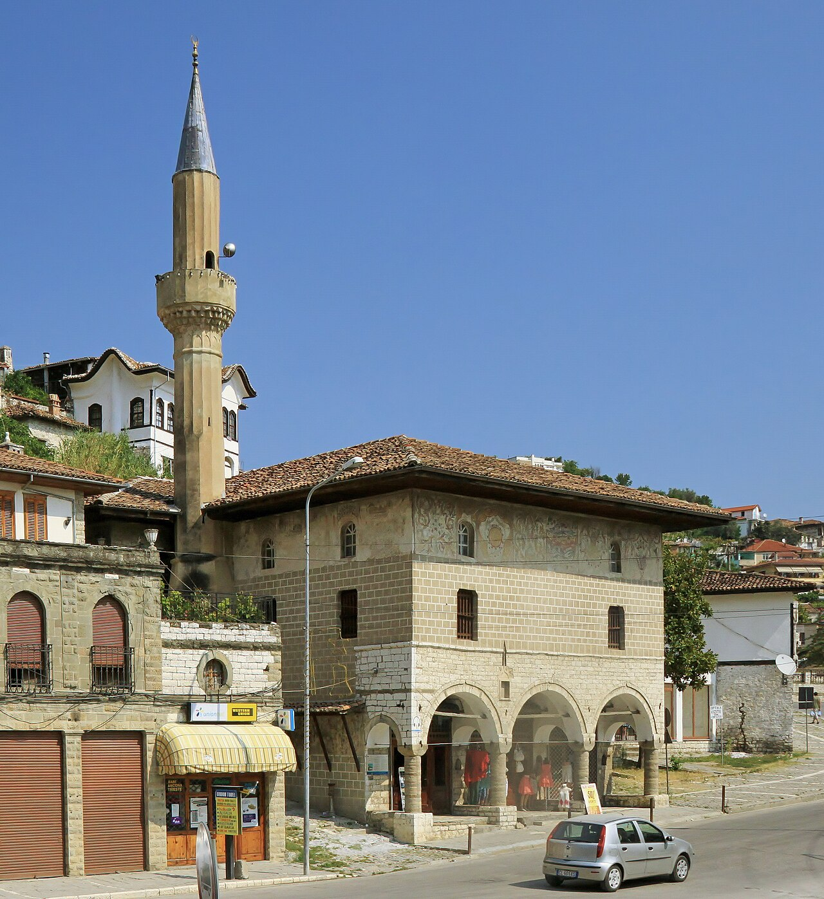
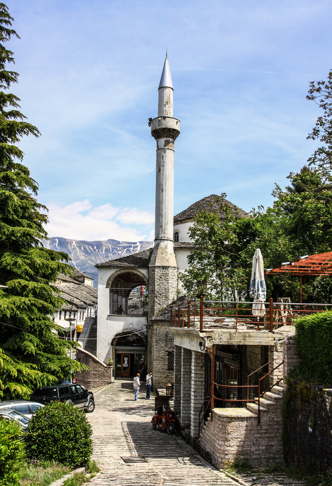
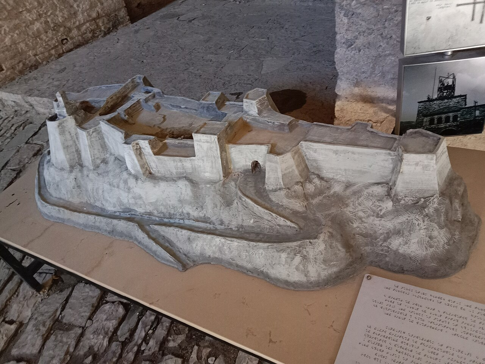
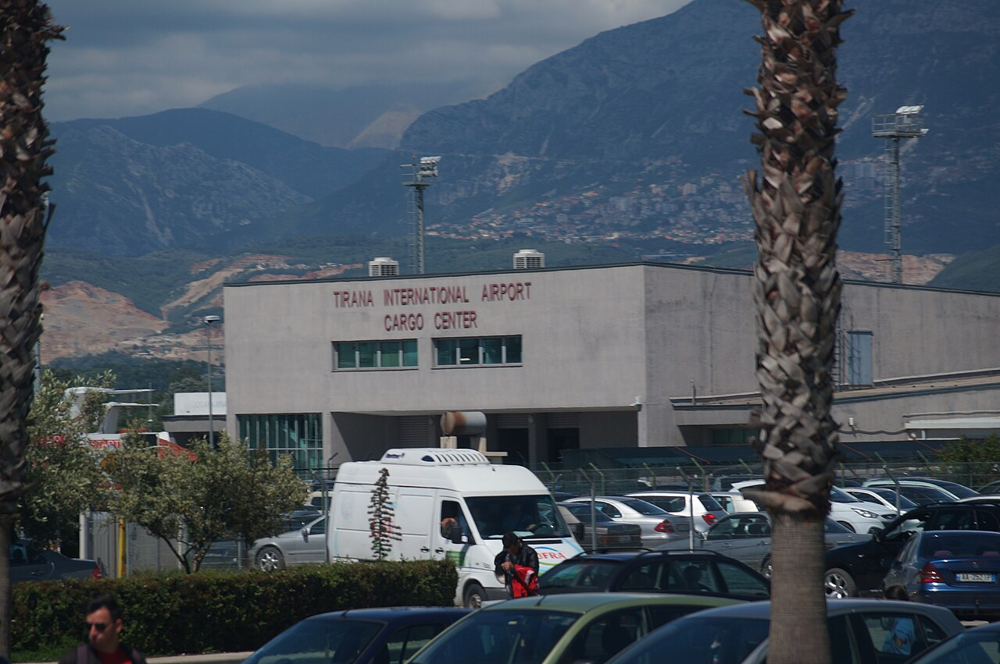

📋 Praktinė informacija
💡 Svarbu žinoti
- Kelias iš Berato į Gjirokastrą veda ne tiesiai per kalnus (Osumo kanjoną ar Përmetą), o ilgesniu, bet visiškai asfaltuotu keliu per Fierį ir Tepelenę – jei Google Maps kelionės metu siūlys trumpesnį maršrutą per Përmetą, jo nerinkite, nes tas kelias yra bekelė, netinkama nuomotam automobiliui.
- Ruožas ties Tepelene ir Vjosos slėniu (2 ir 4 dieną) yra vingiuotas kalnuotas kelias – važiuokite ramiu tempu, nesivaikykite žemėlapio rodomo laiko.
- Kelią iki Osumo kanjono apžvalgos aikštelės (SH72) galima ramiai važiuoti įprastu automobiliu – jis asfaltuotas iki pat aikštelės, tik toliau žemyn veda tik pėsčiųjų takas.
- 4 dieną iki oro uosto atvyksite su solidžia daugiau nei 3 valandų atsarga iki skrydžio – skubėti nereikės, bet pietų pertraukos Fieryje verta nesitęsti ilgiau nei suplanuota.
🗺️ Kelionės žemėlapis
1 diena · spalio 30, penktadienis
Tiranos oro uostas (TIA)
Atskridus iš Varšuvos, pirmiausia atsiimkite bagažą ir nuomos automobilį. Iki miesto centro važiuoti apie 25–30 minučių, kelias tiesus ir naktį ramus.
📍 Žemėlapyje
© albinfo, CC0 · šaltinis
Viešbutis Tiranos centre (Skanderbego aikštės rajonas)
Nakvynė pačiame miesto centre – prieš miegą verta trumpam nueiti iki Skanderbego aikštės, Et'hem Bėjaus mečetės ir laikrodžio bokšto, kurie vakarais gražiai apšviesti. Vakarienei rinkitės Bloku kvartalą (apie 10 min pėsčiomis nuo aikštės) – ten daug nebrangių vietinių užkandinių su qofte, byrek ir kitais tradiciniais patiekalais. Automobilį patogiausia palikti mokamoje aikštelėje ar viešbučio parkavimo vietoje. Iš vakaro pasitikslinkite su viešbučiu vėlyvo įsiregistravimo laiką.
📍 Žemėlapyje
© Pudelek, CC BY-SA 4.0 · šaltinis
2 diena · spalio 31, šeštadienis
Viešbutis Tiranos centre
Ryto pradžia mieste – po pusryčių keliaukite tiesiai Berato kryptimi, kelias trunka apie 2 valandas. Automobilį iš nakties parkavimo atsiimkite laiku, kad išvengtumėte ryto spūsčių centre.
Berato pilis ir senamiestis (pirmas žvilgsnis)
Trumpas stabtelėjimas pažvelgti į UNESCO senamiestį ir pilį iš apačios – pilnas apsilankymas laukia po pietų, grįžus iš kanjono.
📍 Žemėlapyje
© Marcin Konsek, CC BY-SA 4.0 · šaltinis
Osumo kanjono apžvalgos aikštelė
Įspūdingas kanjono vaizdas nuo aikštelės viršuje. Kelias iš Berato čia asfaltuotas, automobilį palikite aikštelėje – žemyn eina tik pėsčiųjų takas, avėkite patogią avalynę, gali būti šlapia. Grįžkite tuo pačiu asfaltuotu keliu (SH72) atgal į Beratą pietų.
📍 Žemėlapyje
© Pasztilla aka Attila Terbócs, CC BY-SA 4.0 · šaltinis
Pietūs Berato senamiestyje (restoranas „Homeri“, Mangalemas)
Pietų pertrauka Mangalemo kvartale, netoli senamiesčio – vietinė virtuvė ir gražus vaizdas į upę bei pilies kalvą. Automobilį palikite apatinėje aikštelėje, senamiesčio gatvelės siauros ir netinkamos važiavimui.
📍 Žemėlapyje
© Marcin Konsek, CC BY-SA 4.0 · šaltinis
Beratas – senamiestis ir pilis (nakvynė)
Po pietų pasivaikščiokite po Mangalemo ir Goricos kvartalus, užlipkite iki pilies – saulei leidžiantis apie 16:30–17:00 vaizdas nuo Goricos tilto ypač gražus. Automobilį geriausia palikti apačioje, senamiesčio gatvelės siauros. Kitą rytą išvažiuokite anksti, apie 08:15 – kelias iki Gjirokastros kalnuotas ir ilgesnis, nei atrodo žemėlapyje.
📍 Žemėlapyje
© Marcin Konsek, CC BY-SA 4.0 · šaltinis
3 diena · lapkričio 1, sekmadienis
Beratas
Anksti ryte išvykstame Gjirokastros kryptimi – kelias per kalnus ilgesnis, nei rodo žemėlapis, tad neskubėkite ir stabtelėkite, jei norėsite pasigrožėti vaizdais.
Gjirokastros senasis bazaras – pietūs (Kujtimi)
Atvykę turėsite laisvo laiko pasivaikščioti po akmenimis grįstą bazarą prieš pietus 13:00–14:00 tradiciniame restorane Kujtimi.
📍 Žemėlapyje
© Marcos Escudero Olano, CC BY-SA 2.0 · šaltinis
Gjirokastros pilis
UNESCO senamiestis ir pilis su ginklų ekspozicija bei plačiu vaizdu į Drino slėnį. Kelias į pilį status – patogi avalynė pravers. Automobilį palikite prie senamiesčio apačioje esančiose aikštelėse.
📍 Žemėlapyje
© Klein Muçi, CC BY-SA 4.0 · šaltinis
4 diena · lapkričio 2, pirmadienis
Gjirokastros pilis
Paskutinis rytas Gjirokastroje – trumpai atsisveikinkite su pilimi ir senamiesčiu, tada išvykstame į Fjerį ir Tiranos oro uostą.
Fier – pietų pertrauka
Sustojimas pusiaukelėje į oro uostą – laisvo laiko ir pietūs 13:00–14:00 miesto centre prieš paskutinį važiavimo etapą.
📍 Žemėlapyje
© RoyalHeritageAlb, CC BY-SA 4.0 · šaltinis
Tiranos oro uostas (TIA) – automobilio grąžinimas
Ramiu tempu pravažiuokite pakrantės kelią iki oro uosto – jis ilgesnis, nei atrodo žemėlapyje. Su gera atsarga grąžinkite nuomos automobilį ir registruokitės skrydžiui TIA→WAW (19:05) – iki skrydžio liks daugiau nei 3 valandos, tad skubėti nereikės.
📍 Žemėlapyje
© albinfo, CC0 · šaltinis
💶 Biudžeto sąmata (visai grupei, 4 žmonės)
| Kategorija | Min | Tikėtina | Maks |
|---|---|---|---|
| Skrydžiai (WAW/WMI ⇄ TIA, 4 keleiviai) | €186 | €200 | €620 |
| Registruotas bagažas | €100 | €150 | €200 |
| Automobilio nuoma (4 d., pilnas draudimas) | €120 | €168 | €240 |
| Kuras | €65 | €85 | €110 |
| Nakvynės (3 naktys, 2 kambariai) | €178 | €270 | €410 |
| Maistas | €300 | €450 | €650 |
| Įėjimo bilietai | €20 | €35 | €60 |
| Iš viso | €969 | €1 358 | €2 290 |
≈ €242 / €340 / €573 vienam žmogui. Skrydžių kainos yra bazinės (be registruoto bagažo) ir gali svyruoti iki išvykimo – verta rezervuoti skrydžius ir nakvynes iš anksto, likus 1–2 mėnesiams iki kelionės.